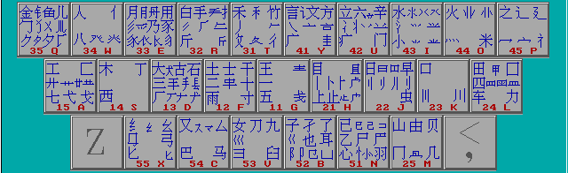

字根，是由若干笔划交叉连接而形成的相对不变的结构叫字根。
五笔字型中优选了130种基本字根，分五大区，每区又分五个位。
一区∶横起笔类 27种，分“王土大木工”五个位；
二区∶竖起笔类 23种，分“目日口田山”五个位；
三区∶撇起笔类 29种，分“禾白月人金”五个位；
四区∶捺起笔类 23种，分“言立水火之”五个位；
五区∶折起笔类 28种，分“已子女又纟”四个位；
所有字根及其在键盘上的分部如下图

口诀
口诀就是将每个键上的主要字根串联成一句话，只要你记熟这句口诀，那么这个键上的主要字根你便能够想起来。例如口诀“土士二干十寸雨”就是字根“土”、“士”、“二”、“干”等F键上。其它类似（对照口诀和键盘图便可理解）。熟悉口诀对于记住字根有重要的作用。
口诀如下：
| 区 | 键 | 口诀 |
| 一区 | 11-G | 王旁青头戋（兼）五一，(“兼”与“戋”同音) |
| 12-F | 土士二干十寸雨。 | |
| 13-D | 大犬三羊古石厂， （“羊”指羊字底） | |
| 14-S | 木丁西， | |
| 15-A | 工戈草头右框七。 （“右框”即“匚”） | |
| 二区 | 21-H | 目具上止卜虎皮，(“具上”指具字的上部,"虎皮"指的是"虍") |
| 22-J | 日早两竖与虫依。 | |
| 23-K | 口与川，字根稀， | |
| 24-L | 田甲方框四车力。 (“方框”即“囗”) | |
| 25-M | 山由贝，下框几。 | |
| 三区 | 31-T | 禾竹一撇双人立， (“双人立”即“彳”) |
| 反文条头共三一。 (“条头”即“夂”) | ||
| 32-R | 白手看头三二斤， | |
| 33-E | 月彡(衫)乃用家衣底。 (“家衣底”即“豕、巍) | |
| 34-W | 人和八，三四里， (“人”和“八”在第3区第4个键里边) | |
| 35-Q | 金勺缺点无尾鱼， 犬旁留叉儿一点夕， 氏无七（妻）。 (“氏”去掉“七”) |
|
| 四区 | 41-Y | 言文方广在四一， 高头一捺谁人去。(高头“ ”，“谁”去“亻” 为“讠、”) |
| 42-U | 立辛两点六门疒， | |
| 43-I | 水旁兴头小倒立。 (指“氵”等) | |
| 44-O | 火业头，四点米， | |
| 45-P | 之字军盖建道底，
(即“之、宀、冖、廴、辶”) 摘礻(示)衤(衣)。 |
|
|
五区 |
51-N | 已半巳满不出己， 左框折尸心和羽。 (“左框”即“颉) |
| 52-B | 子耳了也框向上。 (“框向上”即“凵”) | |
| 53-V | 女刀九臼山朝西。 (“山朝西”即“彐”) | |
| 54-C | 又巴马，丢矢矣， (“矣”去“矢”为“厶”) | |
| 55-X | 慈母无心弓和匕，
(“母无心”即“”) 幼无力。 (“幼”去“力”为“幺”) |
一、手指放在键盘上
如下图，手指放在八个基本键上，两个拇指轻放在空格键上。
二、击键要领
1.手指弯曲要自然，手臂不可张开太大
2.手指击键要正确，击键有适当力度，击键之后要立即回到基准键上
3.空格键用大拇指负责击打
4.击键有节奏，速度均匀，初学时尽量慢一点，关键是要用正确的指法
基准键的打法：例如要击D键，方法是：1、提起左手约离键盘两厘米；2、向下击键时中指向下弹击D键，其它手指同时稍向上弹开。其它键的击法与此类似，请多体会。形成正确的习惯很重要，而错误的习惯则很难改。
非基准键的打法：例如要打E键，方法是：1、提起左手约离键盘两厘米；2、整个左手稍向前移，同时用中指向下弹击E键，同一时间其它手指稍向上弹开，击键后四个手指迅速回位如上图，注意右手不要动，其它键类似打法，注意体会。
三、手指分工（如下图）
练习英文指法最好花上两三天时间（每天不少于六小时，若少于此数则练习时间要增加）。
请下决心一定要练到盲打的水平，并且每分钟正确地击键不下150次。
根据构成汉字的各字根之间的位置关系，可以把成千上万的方块汉字分三种类型∶左右型，上下型，杂合型。根据汉字的字型，我们也用1─3给出其型状代号，如下表所示∶
| 字型代号 | 字型 | 字 例 |
| 1 | 左右 | 汉湘结封 |
| 2 | 上下 | 字莫花华 |
| 3 | 杂合 | 困凶道乘 太重天且 |
表中最后一种又叫独体字，前二种又统称合体字，两部份合并一起的汉字又叫双合字，三部分合并在一起的又叫三合字。
因为在汉字编取代码时，由于某些汉字字根较少，“信息量不足”，离散不开，所以有必要再补加一个字型信息，而对于由四个部份以上组成或者可以分作四部分的汉字，其信息已够丰富，则不必要再考虑字型信息了，这就是我们今后要取“一二三末”四个字根，且不足四码要追加末笔交叉识别码的原因。
1.一型──左右型
左右型汉字，包括两种情况∶
(1) 在双合字中，两个部分分列左右，其间有一定的矩离如∶肚，胡，理，胆，拥等
(2) 三合字中，整字的三个部分从左至右并列∶或者单独占据一边的部分与另外两个部分呈左、右排列，如∶侧、别、谈等
2.二型──上下型
上下型汉字也包括两种情况∶
(1) 双合字中，两个部分分列上下，其间有一定距离，如字，节，旦，看等
(2) 三合字中，三个部分上下排列，或者单占一层的部分与另外两部分作上下排列，如∶意，想，花等
3.三型──杂合型
（外内型汉字和单体型汉字）
三型是指组成整字的各部分之间没有明确的左右或上下型关系者，如∶困，同，这，斗，头等
| 如： | 机器∶木几口口 (SMKK) |
| 汉字∶氵又宀子 (ICPB) |
三字词
前两个字各取其第一码，最后一个字取其二码，共为四码
如： 计算机∶言竹木几 (YTSM)
四字词
每字各取其第一码，共为四码
| 如： | 汉字编码∶氵宀纟石 (IPXD) |
| 光明日报∶小日日扌 (IJJR) |
多字词
按“一、二、三、末”的规则，取第一、二、三及最末一个字的第一码，共为四码
| 如： | 电子计算机∶日子言木 (JBYS) |
| 中华人民共和国∶口人人囗 (KWWL) |
这里的单字是指除键名汉字和字根字之外的汉字。如果一个字可以取够四个字根，就全部用字根键入，只有在不足四个字根的情况下，才有必要追加识别码。
例∶给：纟 人 一 口 (55 34 11 23 XWGK)
驭：马 又 (54 54 41 CCY )
汉：氵 又 (43 54 41 ICY )
对识别的末笔，这里有二点规定，规定取被包围的那一部分笔划结构的末笔
Ａ．所有包围型汉字中的末笔，规定取被包围的那一部分笔划结构的末笔，如∶
国∶其末笔应取“丶”，识别码为43(I)
远∶其末笔应取“乙”，识别码为53(V)
Ｂ．对于字根“刀、九、力、七”，虽然只有两笔，但一般人的笔顺却常有不同，为了保持一致和照顾直观，规定，凡是这 四种字根当作“末”而又需要识别时，一律用它们向右下角伸得最长最远的笔划“折”来识别，如∶
仇∶34 54 51 ( WVN )
化∶34 55 51 ( WXN )
折分原则可归纳为四个要点∶取大优先，兼顾直观，能连不交，能散不连
l 、取大优先：“取大优先”。按书写顺序拆分汉字时，每次都拆取一个“尽可能大”的，即尽可能笔画多的字根。例1：校：第一种拆法：木、亠、八、X（误）；第二种拆法：木、六、X，显然，前者是错误的，因为亠、八完全“凑”成“六”，形成一个“更大”的字根。至于什么才算“大”，“大”到什么程度，这就需要您熟悉所有的字根了。
2、 兼顾直观：在拆分汉字时，为了照顾汉字字根的完整性，有时不得不暂且牺牲一下“书写顺序”和“取大优先”的原则，形成个别例外的情况。例1：困：按“书写顺序”应拆成：“冂、木、一”，但直观的原则，应该折分为“囗、木”了。
3、 能连不交：请看以下拆分实例：于：一十（二者是相连的）、二丨（二者是相交的）丑：乙土（二者是相连的）、刀二（二者是相交的）。当一个字既可拆成相连的几个部分，也可拆成相交的几个部分时，“相连”的拆法是正确的。
4、 能散不连：笔画和字根之间，字根与字根之间的关系，可以分为“散”、“连”和“交”的三种关系。如：倡：三个字根之间是“散”的关系；自：首笔“丿”与“目”之间是“连”的关系；夷：“一”、“弓”与“人”是“交”的关系。字根之间的关系，决定了汉字的字型(上下、左右、杂合)。
（a）几个字根都“交”“连”在一起的，如“夷”、“丙”等，是“杂合型”。而散结构是“左右”型或“上下”型字。
（b）值得注意的是，有时候一个汉字被拆成的几个部分都是复笔字根(不是单笔画)，它们之间的关系，在“散”和“连”之间模棱两可。如：占：卜口两者按“散”处理，是上下型。只要不是单笔画，一律按“能散不连”判别。因此，上例中的“占”被认为是“上下型”字。
（c）作为以上这些规定，是为了保证编码体系的严整性。实际上，用得上后三条规定的字只是极少数。